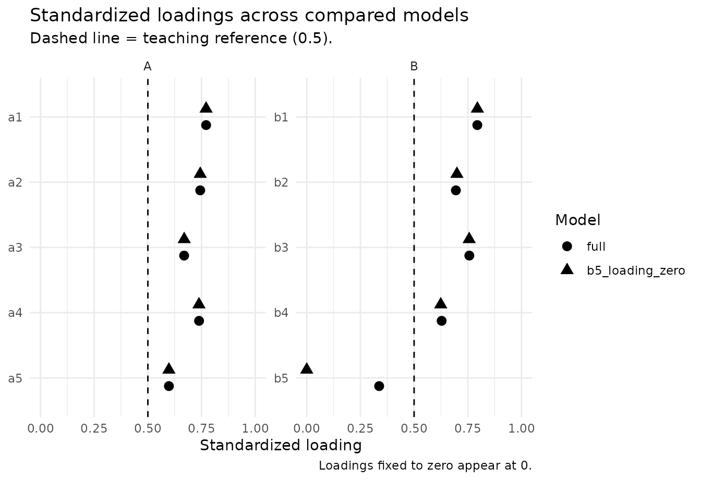

From CFA to a defensible measurement model
Source:vignettes/measurement-model-evidence.Rmd
measurement-model-evidence.RmdWhy measurement evidence is staged
A confirmatory factor model, a reliability coefficient, and a
discriminant-validity statistic answer different questions. Treating
them as interchangeable checkboxes can produce misleading conclusions.
nomologR therefore keeps the workflow staged:
-
nomo_cfa()— Does the proposed measurement structure reproduce the data reasonably, and where is there model strain? -
nomo_reliability()— How consistently does the intended score represent its target under that measurement model? -
nomo_validity()— Do indicators converge on their intended constructs, and are theoretically distinct constructs empirically distinguishable?
The sequence is evidence-guided rather than pass/fail. A reference value can trigger inspection, but it never automatically deletes an indicator, merges constructs, or establishes construct validity.
A healthy two-factor model
We begin with a known two-factor population in which both factors are well measured and moderately correlated.
set.seed(2026)
n <- 500
f1 <- rnorm(n)
f2 <- .30 * f1 + sqrt(1 - .30^2) * rnorm(n)
healthy <- data.frame(
A1 = .82 * f1 + rnorm(n, sd = .55),
A2 = .79 * f1 + rnorm(n, sd = .58),
A3 = .76 * f1 + rnorm(n, sd = .62),
A4 = .80 * f1 + rnorm(n, sd = .57),
B1 = .83 * f2 + rnorm(n, sd = .54),
B2 = .78 * f2 + rnorm(n, sd = .60),
B3 = .75 * f2 + rnorm(n, sd = .63),
B4 = .81 * f2 + rnorm(n, sd = .56)
)
model <- '
F1 =~ A1 + A2 + A3 + A4
F2 =~ B1 + B2 + B3 + B4
'
cfa <- nomo_cfa(model, data = healthy)
# Modest resampling here keeps vignette build time reasonable.
# Use more resamples for final reporting.
rel <- nomo_reliability(
cfa,
ci = "bootstrap",
ci_boot = 100,
ci_seed = 2026
)
val <- nomo_validity(cfa, htmt = "both")The compact summaries are intentionally different from the raw engine output. They surface the evidence most relevant to the user’s next decision without repeating the same full loading table in several places.
summary(rel)## nomologR reliability evidence
## # A tibble: 2 × 7
## construct block indicator_type omega alpha omega_scale signal
## <chr> <chr> <chr> <chr> <chr> <chr> <chr>
## 1 F1 overall continuous 0.891 [0.871, 0.908] 0.89… observed_c… info
## 2 F2 overall continuous 0.862 [0.840, 0.881] 0.86… observed_c… info
## Bracketed values are bootstrap confidence intervals.
##
## Interpretation rule: omega is primary for the congeneric CFA workflow; alpha is secondary and assumption-dependent. Reliability contributes score-precision evidence, not construct validity.
summary(val)## nomologR convergent/discriminant evidence
##
## Convergent evidence by construct
## # A tibble: 2 × 7
## construct block AVE min_abs_loading median_abs_loading n_loading_review
## <chr> <chr> <dbl> <dbl> <dbl> <int>
## 1 F1 overall 0.671 0.793 0.822 0
## 2 F2 overall 0.611 0.711 0.795 0
## # ℹ 1 more variable: signal <chr>
##
## Construct-separation evidence
## # A tibble: 2 × 9
## construct_1 construct_2 block latent_r latent_r_ci_lower latent_r_ci_upper
## <chr> <chr> <chr> <dbl> <dbl> <dbl>
## 1 F2 F1 overall NA NA NA
## 2 F1 F2 overall 0.223 0.127 0.318
## # ℹ 3 more variables: HTMT2 <dbl>, HTMT <dbl>, signal <chr>
##
## Interpretation rule: standardized loadings and AVE address convergent evidence; latent correlations and HTMT-family statistics address construct separation. These are complementary questions, not interchangeable pass/fail tests.The figures also avoid duplication. Item-level loading evidence belongs to the CFA; reliability gets a coefficient plot; convergent validity gets an AVE plot; and construct separation gets an HTMT-family plot.
plot(cfa, type = "loadings")
plot(rel)
plot(val, type = "ave")
plot(val, type = "discriminant")
A healthy result contributes several complementary pieces of evidence. It does not turn the measurement model into a permanently “validated” object. Validity remains an accumulating argument tied to construct interpretation, population, setting, and intended use.
Good global fit does not guarantee good measurement
This is a critical teaching case. The following one-factor model is correctly specified, but its indicators are weak measures of the latent variable.
set.seed(2027)
n <- 650
f <- rnorm(n)
weak <- data.frame(
W1 = .30 * f + rnorm(n, sd = .95),
W2 = .34 * f + rnorm(n, sd = .94),
W3 = .28 * f + rnorm(n, sd = .96),
W4 = .32 * f + rnorm(n, sd = .95),
W5 = .31 * f + rnorm(n, sd = .95)
)
weak_cfa <- nomo_cfa(
'Weak =~ W1 + W2 + W3 + W4 + W5',
data = weak
)
weak_rel <- nomo_reliability(weak_cfa)
weak_val <- nomo_validity(weak_cfa, htmt = "none")
weak_cfa$fit_evidence## # A tibble: 9 × 7
## metric value variant reference direction attention explanation
## <chr> <dbl> <chr> <dbl> <chr> <chr> <chr>
## 1 chi_square 2.79 chisq NA informat… info Descriptiv…
## 2 df 5 df NA informat… info Descriptiv…
## 3 p_value 0.733 pvalue NA informat… info Descriptiv…
## 4 CFI 1 cfi 0.95 higher info At or abov…
## 5 TLI 1.08 tli 0.95 higher info At or abov…
## 6 RMSEA 0 rmsea 0.06 lower info At or belo…
## 7 RMSEA_CI_lower 0 rmsea.ci.lower NA informat… info Descriptiv…
## 8 RMSEA_CI_upper 0.0393 rmsea.ci.upper NA informat… info Descriptiv…
## 9 SRMR 0.0152 srmr 0.08 lower info At or belo…Because the one-factor structure is the correct covariance model, global fit can look quite good. That does not imply that the items strongly represent the construct or that the resulting score is precise.
summary(weak_rel)## nomologR reliability evidence
## # A tibble: 1 × 7
## construct block indicator_type omega alpha omega_scale signal
## <chr> <chr> <chr> <chr> <chr> <chr> <chr>
## 1 Weak overall continuous 0.369 0.363 observed_continuous review
##
## Sampling uncertainty was not bootstrapped. For report-ready intervals, rerun with `ci = "bootstrap"`.
##
## Interpretation rule: omega is primary for the congeneric CFA workflow; alpha is secondary and assumption-dependent. Reliability contributes score-precision evidence, not construct validity.
summary(weak_val)## nomologR convergent/discriminant evidence
##
## Convergent evidence by construct
## # A tibble: 1 × 7
## construct block AVE min_abs_loading median_abs_loading n_loading_review
## <chr> <chr> <dbl> <dbl> <dbl> <int>
## 1 Weak overall 0.114 0.2 0.311 5
## # ℹ 1 more variable: signal <chr>
##
## Construct-separation evidence
## No pairwise construct-separation summary is available.
##
## Interpretation rule: standardized loadings and AVE address convergent evidence; latent correlations and HTMT-family statistics address construct separation. These are complementary questions, not interchangeable pass/fail tests.This is why nomologR does not collapse measurement
quality into a single global-fit verdict. Weak standardized loadings,
low AVE, and weak model-based reliability remain important even when
CFI, RMSEA, or SRMR look favorable.
Strong reliability does not guarantee construct separation
The reverse problem is also possible. Two constructs can each be measured very consistently while remaining difficult to distinguish empirically.
set.seed(2028)
n <- 700
f1 <- rnorm(n)
f2 <- .94 * f1 + sqrt(1 - .94^2) * rnorm(n)
overlap <- data.frame(
A1 = .86 * f1 + rnorm(n, sd = .48),
A2 = .83 * f1 + rnorm(n, sd = .51),
A3 = .84 * f1 + rnorm(n, sd = .50),
B1 = .86 * f2 + rnorm(n, sd = .48),
B2 = .83 * f2 + rnorm(n, sd = .51),
B3 = .84 * f2 + rnorm(n, sd = .50)
)
overlap_model <- '
F1 =~ A1 + A2 + A3
F2 =~ B1 + B2 + B3
'
overlap_cfa <- nomo_cfa(overlap_model, data = overlap)
overlap_rel <- nomo_reliability(overlap_cfa)
overlap_val <- nomo_validity(overlap_cfa, htmt = "both")
summary(overlap_rel)## nomologR reliability evidence
## # A tibble: 2 × 7
## construct block indicator_type omega alpha omega_scale signal
## <chr> <chr> <chr> <chr> <chr> <chr> <chr>
## 1 F1 overall continuous 0.893 0.894 observed_continuous info
## 2 F2 overall continuous 0.896 0.895 observed_continuous info
##
## Sampling uncertainty was not bootstrapped. For report-ready intervals, rerun with `ci = "bootstrap"`.
##
## Interpretation rule: omega is primary for the congeneric CFA workflow; alpha is secondary and assumption-dependent. Reliability contributes score-precision evidence, not construct validity.
summary(overlap_val)## nomologR convergent/discriminant evidence
##
## Convergent evidence by construct
## # A tibble: 2 × 7
## construct block AVE min_abs_loading median_abs_loading n_loading_review
## <chr> <chr> <dbl> <dbl> <dbl> <int>
## 1 F1 overall 0.737 0.837 0.865 0
## 2 F2 overall 0.742 0.848 0.851 0
## # ℹ 1 more variable: signal <chr>
##
## Construct-separation evidence
## # A tibble: 2 × 9
## construct_1 construct_2 block latent_r latent_r_ci_lower latent_r_ci_upper
## <chr> <chr> <chr> <dbl> <dbl> <dbl>
## 1 F2 F1 overall NA NA NA
## 2 F1 F2 overall 0.933 0.912 0.954
## # ℹ 3 more variables: HTMT2 <dbl>, HTMT <dbl>, signal <chr>
##
## Interpretation rule: standardized loadings and AVE address convergent evidence; latent correlations and HTMT-family statistics address construct separation. These are complementary questions, not interchangeable pass/fail tests.Here, strong omega and AVE do not erase a high latent correlation or HTMT2 value. The package therefore recommends investigating theoretical distinctiveness, item content, cross-construct overlap, and the intended construct boundary. It does not automatically merge factors or delete indicators.
plot(overlap_val, type = "discriminant")
Ordered indicators: keep the score scale explicit
For ordered Likert-type indicators, nomo_cfa() uses an
ordered-data CFA workflow when the indicators are declared ordered.
nomo_reliability() then distinguishes the observed
ordinal-score reliability estimand from the hypothetical latent-response
scale.
set.seed(2029)
n <- 500
f <- rnorm(n)
z <- data.frame(
I1 = .82 * f + rnorm(n, sd = .60),
I2 = .79 * f + rnorm(n, sd = .62),
I3 = .76 * f + rnorm(n, sd = .65),
I4 = .80 * f + rnorm(n, sd = .60)
)
ordinal <- as.data.frame(lapply(z, function(x) {
ordered(cut(x, breaks = c(-Inf, -.8, -.25, .25, .8, Inf), labels = 1:5))
}))
ordinal_cfa <- nomo_cfa(
'F =~ I1 + I2 + I3 + I4',
data = ordinal,
ordered = names(ordinal)
)
ordinal_rel <- nomo_reliability(
ordinal_cfa,
ordinal_scale = TRUE,
include_alpha = TRUE
)
summary(ordinal_rel)## nomologR reliability evidence
## # A tibble: 1 × 7
## construct block indicator_type omega alpha omega_scale signal
## <chr> <chr> <chr> <chr> <chr> <chr> <chr>
## 1 F overall ordered 0.829 NA observed_ordinal info
##
## Secondary alpha unavailable for:
## # A tibble: 1 × 4
## construct indicator_type score_scale
## <chr> <chr> <chr>
## 1 F ordered observed_ordinal
## reason
## <chr>
## 1 Observed-scale alpha is not computed from an ordered-indicator CFA. Current s…
##
## Sampling uncertainty was not bootstrapped. For report-ready intervals, rerun with `ci = "bootstrap"`.
##
## Interpretation rule: omega is primary for the congeneric CFA workflow; alpha is secondary and assumption-dependent. Reliability contributes score-precision evidence, not construct validity.Observed-scale omega is available for the practical ordinal composite. Observed-scale alpha is deliberately reported as unavailable in this ordered-CFA estimand rather than silently replacing it with a different definition. The point is not to maximize the number of coefficients reported; it is to keep the score and estimand clear.
Continuing the exploratory example
The exploratory walkthrough
flagged a cross-loading item (a5) and a weak item
(b5) in nomo_demo_continuous. Suppose the
researcher prespecifies the intended two-factor simple structure with
all ten items and fits it as a CFA:
demo_model <- nomo_model(list(
A = c("a1", "a2", "a3", "a4", "a5"),
B = c("b1", "b2", "b3", "b4", "b5")
))
demo_cfa <- nomo_cfa(demo_model, data = nomo_demo_continuous)
demo_cfa$fit_evidence## # A tibble: 9 × 7
## metric value variant reference direction attention explanation
## <chr> <dbl> <chr> <dbl> <chr> <chr> <chr>
## 1 chi_square 75.8 chisq NA informat… info Descriptiv…
## 2 df 34 df NA informat… info Descriptiv…
## 3 p_value 0.0000500 pvalue NA informat… info Descriptiv…
## 4 CFI 0.973 cfi 0.95 higher info At or abov…
## 5 TLI 0.965 tli 0.95 higher info At or abov…
## 6 RMSEA 0.0510 rmsea 0.06 lower info At or belo…
## 7 RMSEA_CI_lower 0.0356 rmsea.ci.… NA informat… info Descriptiv…
## 8 RMSEA_CI_upper 0.0665 rmsea.ci.… NA informat… info Descriptiv…
## 9 SRMR 0.0519 srmr 0.08 lower info At or belo…
head(demo_cfa$top_modification_indices, 5)## # A tibble: 5 × 8
## lhs op rhs mi epc sepc.lv sepc.all sepc.nox
## <chr> <chr> <chr> <dbl> <dbl> <dbl> <dbl> <dbl>
## 1 B =~ a5 48.3 0.488 0.377 0.365 0.365
## 2 B =~ a1 9.41 -0.183 -0.141 -0.145 -0.145
## 3 a5 ~~ b3 7.57 0.0812 0.0812 0.150 0.150
## 4 a5 ~~ b1 4.78 0.0610 0.0610 0.125 0.125
## 5 a3 ~~ a4 4.64 0.0732 0.0732 0.133 0.133Three lessons carry over from the exploratory stage:
-
Modification indices are quarantined. The largest
index points toward the cross-loading that the data-generating model
contains, but
nomologRdoes not add it. Allowing a cross-loading, revising the item, or evaluating a model without it is a theoretical decision; freeing parameters because an index is large is capitalization on chance (MacCallum, Roznowski, & Necowitz, 1992). -
The same sample is not independent confirmation.
This CFA uses the data that suggested the structure.
nomo_split()or a new sample provides a stronger test. -
Missing data are handled explicitly. By default
lavaan uses complete cases here;
missing = "fiml"requests full-information maximum likelihood for continuous indicators, and the decision is recorded. Whether the results depend on that choice is a separate question, taken up below.
Comparing models with a recorded rationale
nomo_compare() evaluates competing measurement models
side by side. It requires a rationale, checks whether the models are
nested, reports the difference test that matches the estimator when they
are, and never selects a model automatically.
A cross-loading suggested by the results
The largest modification index above pointed to a loading of
a5 on factor B. Because that idea came from the results
rather than from theory stated in advance, the comparison is labeled
post hoc:
cross_cfa <- nomo_cfa(
"A =~ a1 + a2 + a3 + a4 + a5\nB =~ b1 + b2 + b3 + b4 + b5 + a5",
data = nomo_demo_continuous
)
cross_comparison <- nomo_compare(
simple_structure = demo_cfa,
cross_loading = cross_cfa,
rationale = "The largest modification index suggested that a5 also reflects factor B.",
origin = "post_hoc"
)
cross_comparison## <nomo_compare>
## Models: 2 | Reference: simple_structure | Estimator: ML | Cases: 473 | Origin: post-hoc
## Rationale: The largest modification index suggested that a5 also reflects factor B.
##
## Compared with `simple_structure`:
## - cross_loading (nested, less constrained): chi-square difference = 48.72, df = 1, p < .001; dCFI +0.027, dRMSEA -0.051; dAIC -46.7
##
## No model was selected automatically. Use summary() for interpretations and measurement evidence.Estimating the cross-loading reduces misfit (chi-square difference =
48.7, df = 1, p < .001; CFI changes by +0.027). That is exactly the
feature built into these simulated data, but with real data the evidence
alone does not settle the question. Does the wording of a5
plausibly reflect both constructs? Because the comparison is post hoc,
the decision log records it as such and recommends confirming the
retained model in independent data.
Is a weak item needed?
b5 loads weakly on B. Dropping b5 from the
model changes the data being modeled, so a model without the column
cannot be tested against the full model. Instead, keep b5
and fix its loading to zero:
b5_zero_cfa <- nomo_cfa(
"A =~ a1 + a2 + a3 + a4 + a5\nB =~ b1 + b2 + b3 + b4 + 0*b5",
data = nomo_demo_continuous
)
b5_comparison <- nomo_compare(
full = demo_cfa,
b5_loading_zero = b5_zero_cfa,
rationale = paste(
"Evaluate whether the weakly loading item b5 contributes to factor B",
"before deciding whether to keep it."
)
)
summary(b5_comparison)## nomologR measurement-model comparison
## Rationale: Evaluate whether the weakly loading item b5 contributes to factor B before deciding whether to keep it.
## Origin: a-priori | Reference model: full
##
## Model fit and information criteria
## # A tibble: 2 × 11
## model npar df chisq cfi tli rmsea srmr aic bic
## <chr> <dbl> <dbl> <dbl> <dbl> <dbl> <dbl> <dbl> <dbl> <dbl>
## 1 full 21 34 75.8 0.973 0.965 0.051 0.052 11981 12068.
## 2 b5_loading_zero 20 35 123. 0.944 0.928 0.073 0.093 12026. 12109.
## fixed_zero_loadings
## <int>
## 1 0
## 2 1
##
## Comparisons with the reference model
## # A tibble: 1 × 12
## model relation nesting_check method chisq_diff df_diff
## <chr> <chr> <chr> <chr> <dbl> <dbl>
## 1 b5_loading_zero more_constrained nested standard 46.9 1
## p_value delta_cfi delta_rmsea delta_srmr delta_aic delta_bic
## <dbl> <dbl> <dbl> <dbl> <dbl> <dbl>
## 1 0 -0.029 0.022 0.042 44.9 40.8
##
## Interpretation
## - `b5_loading_zero` is nested within `full` and has 1 more degree(s) of freedom (additional constraints). Chi-Squared Difference Test: chi-square difference = 46.91, df = 1, p < .001. A small p-value indicates that the extra constraints are not fully consistent with the data; with large samples, even small misspecifications produce small p-values. Change in fit (`b5_loading_zero` minus `full`): CFI -0.029, TLI -0.036, RMSEA +0.022, SRMR +0.042. AIC +44.9 and BIC +40.8 (`b5_loading_zero` minus `full`); lower values favor a model for these data, and only differences are interpretable. No model is selected automatically; read this evidence with theory and the recorded rationale.
##
## Standardized loadings by model
## # A tibble: 10 × 4
## factor item full b5_loading_zero
## <chr> <chr> <dbl> <dbl>
## 1 A a1 0.771 0.771
## 2 A a2 0.744 0.744
## 3 A a3 0.669 0.669
## 4 A a4 0.738 0.738
## 5 A a5 0.598 0.598
## 6 B b1 0.794 0.795
## 7 B b2 0.695 0.699
## 8 B b3 0.757 0.757
## 9 B b4 0.628 0.624
## 10 B b5 0.337 0
##
## Measurement evidence by model
## # A tibble: 14 × 4
## model construct metric estimate
## <chr> <chr> <chr> <dbl>
## 1 full A omega 0.835
## 2 full B omega 0.784
## 3 full A alpha 0.827
## 4 full B alpha 0.771
## 5 full A AVE 0.497
## 6 full B AVE 0.434
## 7 full B vs A HTMT2 0.533
## 8 b5_loading_zero A omega 0.835
## 9 b5_loading_zero B omega 0.622
## 10 b5_loading_zero A alpha 0.827
## 11 b5_loading_zero B alpha 0.771
## 12 b5_loading_zero A AVE 0.497
## 13 b5_loading_zero B AVE 0.521
## 14 b5_loading_zero B vs A HTMT2 0.533
## Notes:
## - Loading(s) fixed to zero for b5 keep those item(s) in this composite; the coefficient does not describe a shortened scale.
##
## No model was selected automatically. Difference tests, changes in fit, information criteria, and measurement evidence answer different questions; read them together with theory and the recorded rationale.Fixing the loading to zero worsens fit (chi-square difference = 46.9,
df = 1, p < .001), so b5 is statistically related to B.
Its standardized loading, however, is only 0.34. With 473 cases, even a
weak relation is detectable; statistical detectability is not the same
as an adequate indicator. The decision still depends on whether
b5 covers content the construct needs.
plot(b5_comparison, type = "loadings")
The summary’s measurement evidence carries a note: omega for B in the
zero-loading model still includes b5 in the composite, so
it does not describe a shortened four-item scale. To see that scale’s
reliability, fit the model without b5. Because the two
models contain different observed variables, nomo_compare()
reports this comparison descriptively, without a difference test or
information criteria:
shortened_cfa <- nomo_cfa(
"A =~ a1 + a2 + a3 + a4 + a5\nB =~ b1 + b2 + b3 + b4",
data = nomo_demo_continuous
)
shortened <- nomo_compare(
full = demo_cfa,
four_item_b = shortened_cfa,
rationale = "Describe the reliability of a four-item B scale alongside the full scale."
)
nomo_table(shortened, "comparisons")[, c("model", "relation", "test_available", "ic_available")]## # A tibble: 1 × 4
## model relation test_available ic_available
## <chr> <chr> <lgl> <lgl>
## 1 four_item_b different_variables FALSE FALSE
omega_rows <- nomo_table(shortened, "evidence")
omega_rows[omega_rows$metric == "omega", c("model", "construct", "estimate")]## # A tibble: 4 × 3
## model construct estimate
## <chr> <chr> <dbl>
## 1 full A 0.835
## 2 full B 0.784
## 3 four_item_b A 0.835
## 4 four_item_b B 0.812Together these results separate three questions that are easy to blur: whether an item is statistically related to its factor, whether it is a strong indicator, and how the score’s reliability changes without it. None of them alone decides whether the item stays.
Does a result depend on how missing data were handled?
demo_cfa used lavaan’s default, listwise deletion, which
analyses only the cases observed on every item.
nomo_missing() refits the same model under alternative
strategies and reports what changes. For continuous indicators it
compares listwise deletion with full-information maximum likelihood
(FIML), which uses every observed response:
demo_missing <- nomo_missing(demo_cfa, data = nomo_demo_continuous)
demo_missing## <nomo_missing>
## Missing-data sensitivity for a nomo_cfa | reference: FIML | fitted with: Listwise deletion
## 27 of 500 cases incomplete (5.4%) in 3 pattern(s); lowest covariance coverage 0.946 (a2, b3)
##
## Strategies
## # A tibble: 2 × 8
## label lavaan_missing requires role available n_used
## <chr> <chr> <chr> <chr> <lgl> <dbl>
## 1 Listwise deletion listwise MCAR comparison TRUE 473
## 2 FIML ml MAR reference TRUE 500
## converged admissible
## <lgl> <lgl>
## 1 TRUE TRUE
## 2 TRUE TRUE
##
## Largest differences from the reference, in reference standard errors
## # A tibble: 5 × 5
## parameter strategy estimate reference difference_in_se
## <chr> <chr> <dbl> <dbl> <dbl>
## 1 A ~~ B Listwise deletion 0.499 0.48 0.45
## 2 B =~ b5 Listwise deletion 0.337 0.353 -0.37
## 3 A =~ a5 Listwise deletion 0.598 0.59 0.23
## 4 A =~ a3 Listwise deletion 0.669 0.675 -0.21
## 5 B =~ b3 Listwise deletion 0.757 0.762 -0.17
##
## Whether data are missing at random cannot be tested from these data; see nomo_table(x, "decision_log").The two strategies make different assumptions. Listwise deletion requires data missing completely at random (MCAR). FIML requires the weaker condition that data are missing at random (MAR), meaning that whether a value is missing may depend on other observed values but not on the missing value itself. In Enders and Bandalos’s (2001) simulations, all of these methods were unbiased under MCAR, and FIML was the most efficient. Under MAR, FIML alone remained unbiased across the parameters they examined.
The missing values in nomo_demo_continuous were
introduced completely at random, so theory predicts agreement, and that
is what the comparison shows. Listwise deletion discards 27 cases. No
estimate moves by as much as half a standard error. That is the size
Schafer and Graham (2002) treat as practically important for bias,
because beyond it confidence intervals noticeably lose coverage.
Reliability barely moves either:
nomo_table(demo_missing, "reliability")## # A tibble: 8 × 8
## construct block metric strategy role estimate reference_estimate difference
## <chr> <chr> <chr> <chr> <chr> <dbl> <dbl> <dbl>
## 1 A overall omega listwise comp… 0.835 0.835 -0.000589
## 2 A overall omega ml refe… 0.835 0.835 NA
## 3 B overall omega listwise comp… 0.784 0.785 -0.00151
## 4 B overall omega ml refe… 0.785 0.785 NA
## 5 A overall alpha listwise comp… 0.827 0.828 -0.000358
## 6 A overall alpha ml refe… 0.828 0.828 NA
## 7 B overall alpha listwise comp… 0.771 0.775 -0.00328
## 8 B overall alpha ml refe… 0.775 0.775 NAWhen the strategies disagree
Differences appear when data are missing at random but not completely at random. In this simulation the population factor correlation is .50. Most cases with high scores on factor A are missing every B item, so whether B is missing depends on the observed A items:
set.seed(32)
n <- 4000
f <- matrix(rnorm(n * 2), n, 2) %*% chol(matrix(c(1, .5, .5, 1), 2))
items <- cbind(
f[, 1] %o% rep(.7, 4) + matrix(rnorm(n * 4, sd = sqrt(1 - .7^2)), n),
f[, 2] %o% rep(.7, 4) + matrix(rnorm(n * 4, sd = sqrt(1 - .7^2)), n)
)
mar_data <- as.data.frame(items)
names(mar_data) <- c(paste0("a", 1:4), paste0("b", 1:4))
high_a <- rowMeans(mar_data[, paste0("a", 1:4)]) > 0
drop <- high_a & runif(n) < .90
mar_data[drop, paste0("b", 1:4)] <- NA
mar_model <- "A =~ a1 + a2 + a3 + a4\nB =~ b1 + b2 + b3 + b4"
mar_missing <- nomo_missing(
nomo_cfa(mar_model, data = mar_data),
data = mar_data,
reliability = FALSE
)
mar_estimates <- nomo_table(mar_missing, "estimates")
mar_estimates[mar_estimates$type == "factor_correlation",
c("strategy", "estimate", "se", "difference_in_se")]## # A tibble: 2 × 4
## strategy estimate se difference_in_se
## <chr> <dbl> <dbl> <dbl>
## 1 listwise 0.411 0.0264 -2.01
## 2 ml 0.467 0.0280 NAFIML’s estimate, 0.467, is 1.2 of its standard errors from the population value, within sampling error. Listwise deletion’s, 0.411, is 3.4 standard errors below it. The complete cases under-represent high scorers on A, and that restricted range attenuates the correlation. The decision log flags the difference and says what it can and cannot mean:
mar_log <- nomo_table(mar_missing, "decision_log")
mar_log$recommendation[mar_log$metric == "estimate_difference"]## [1] "If the data are MAR and the model is correct, FIML is consistent and this difference estimates the bias listwise deletion introduces; Schafer and Graham (2002) treat a bias of this size as practically important. Listwise deletion analyses 1789 fewer cases than the fullest strategy (44.7%), and the more cases a strategy discards, the larger the differences that sampling variability alone produces. Report which strategy the results rest on and why."The flag carries two qualifications:
- The difference estimates listwise deletion’s bias only if the data are MAR and the model is correct, because only then is FIML consistent.
- The two strategies analyse different cases, so part of any difference is sampling variability. The more cases listwise deletion discards, the larger that part becomes.
What the comparison cannot tell you
Whether data are MAR cannot, in general, be tested from the data at
hand (Schafer & Graham, 2002). Agreement between strategies
therefore shows only that a result does not depend on the choice between
them. It does not show that either strategy is unbiased: when data are
missing not at random, neither is guaranteed to be. The strategy belongs
in the analysis plan, decided in advance, and
nomo_missing() reports how much the results depend on
it.
For ordered indicators estimated with WLSMV, lavaan does not offer
FIML, so nomo_missing() compares listwise with pairwise
deletion. Both require MCAR, so a difference between them shows that the
result depends on the choice, but it cannot be attributed to either
strategy.
Mean substitution is not offered. Replacing each missing value with the item mean shrinks variances and distorts covariances. Schafer and Graham (2002) show that even under MCAR it narrows confidence intervals: with a quarter of values missing, a nominal 95% interval for a mean covers the true value only about 86% of the time. Multiple imputation, which Schafer and Graham recommend alongside maximum likelihood, is a candidate for a later release.
Reading the evidence as an argument
A useful measurement conclusion is rarely “all cutoffs passed.” A stronger conclusion identifies what each analysis contributes and what remains uncertain. The workflow is therefore designed around four questions:
- Structure: Is the hypothesized factor model a reasonable representation of the data?
- Precision: Is the intended score sufficiently reliable for its use, conditional on that model?
- Convergence: Do indicators substantially represent the intended construct?
- Separation: Are constructs that theory distinguishes also distinguishable empirically?
The resulting decision logs preserve observations, references, recommendations, and researcher decisions without automatically changing the scale or model.
Research basis
The reliability workflow follows the literature recommending
model-based omega for congeneric measurement and cautioning against
mechanical use of coefficient alpha, including Dunn, Baguley, and
Brunsden (2014), Flora (2020), and Bell, Chalmers, and Flora (2024).
Ordered-score reliability follows the distinction emphasized by Green
and Yang (2009) and implemented in semTools.
The validity workflow treats AVE as convergent evidence rather than reliability, following Fornell and Larcker (1981). For construct separation, HTMT-family evidence is prioritized because simulation research shows that older criteria can miss overlap (Henseler, Ringle, & Sarstedt, 2015). HTMT2 is emphasized for congeneric measurement because it relaxes the original HTMT tau-equivalence assumption (Roemer, Schuberth, & Henseler, 2021). Fornell-Larcker output remains available only as optional historical/ supporting information.
The missing-data comparison follows Enders and Bandalos (2001), whose simulations compared FIML with listwise and pairwise deletion under MCAR and MAR, and Schafer and Graham (2002), who review the older methods and explain why MAR cannot be tested from the data at hand.
The research basis article places
each of these methods between historical and contemporary practice, and
nomo_methods(stage = c("cfa", "compare", "reliability", "validity"))
returns the same information as a table, with full references.